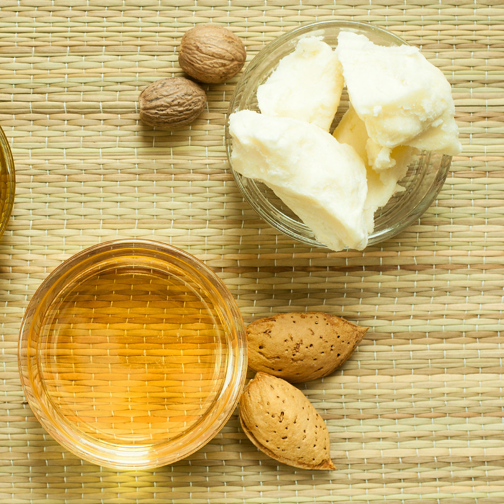

Benefits and Uses of Shea Nuts
Shea butter from shea nuts is a versatile product with cosmetic, medicinal, and culinary uses. It's valued for its moisturizing and healing properties.

Skincare
Shea butter is widely used in lotions, soaps, and creams for its hydrating and soothing effects. Read More

Culinary Use
In some Ghanaian communities, shea butter is used for cooking and frying. Read More

Traditional Medicine
Shea butter is used in herbal remedies for treating wounds, colds, and muscle pain. Read More